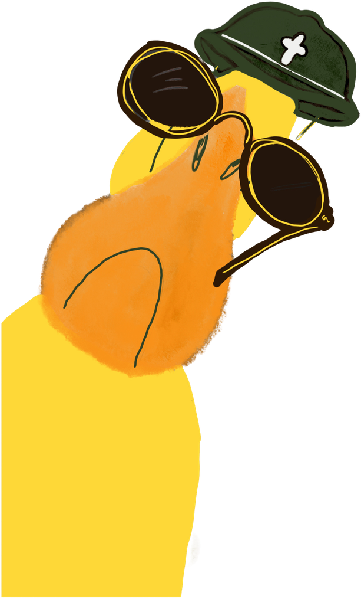
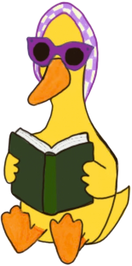
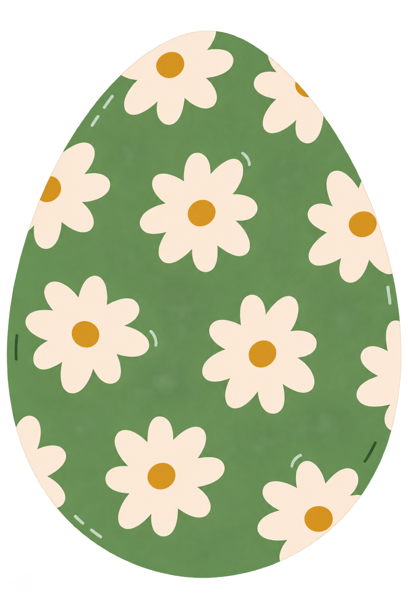

O campo para jovens dos 19 aos 26 anos.


AJUDA O PATO A SAIR DA CASCA

Há muitas formas de ajudar o PATO a crescer.
O campo para jovens dos 19 aos 26 anos.



Há muitas formas de ajudar o PATO a crescer.